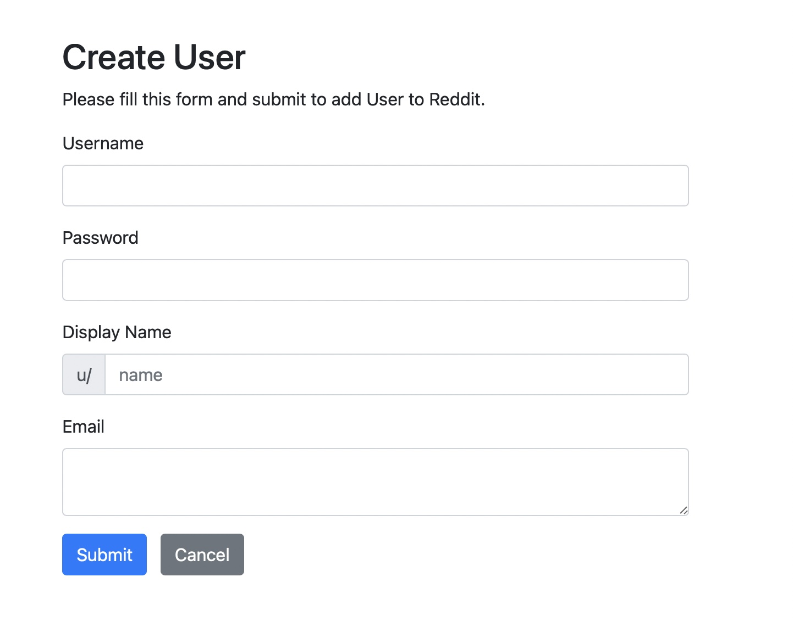
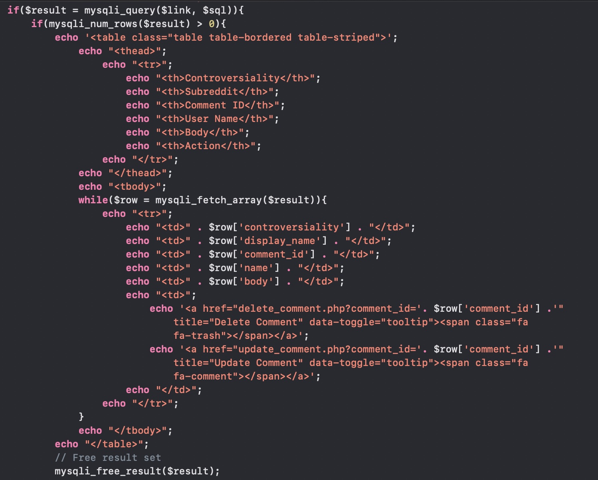

About
Languages ~ mySQL/Python/HTML/CSS/PHP
The reddit database is a project that was created for my databases class partnered project. To gather the data, we created a scraper on Python to extract data. The Praw class allowed us to access real data from reddit to add to our database. This project featured a mySQL relational database. There were the following tables: SUBREDDIT, USER, MODERATOR, COMMENT, POST, COMMEN_AWARD, and POST_AWARD. The subreddit and user tables were the only entities without a foreign key, while the comment table had foreign keys to the user, post, and subreddit entites.
We decided to give our project a website to present to the class. We used PHP to connect to the database, which allowed us to query results and update tables. The website is very limited, but can interact with our database.
Code and Interface Examples
Main Page
The homepage has a description of our project, as well as old and new ER diagrams, and the tables that make up our database.
ER Diagrams
Subreddit Page
The subreddit section brings you to a landing page that prompts you to search for a website and shows you the top 5 subreddits by subscribers. You then enter a subreddit's name and how many results you want. You can also select advanced features like searching using subscribers, subreddit is, and public description. By entering the search, it will take you to a new page with the results.
Subreddit Code
Subreddit Interface
User Page
The user section prompts you to create a new user or search to view the best and worst users by subreddit. Entering the search will bring youto a new page and showcases the five best and worst side by side. While the create new user pages has a form where you enter a new username, password, display name, and email.
User Code

User Interface
Comment Page
The comment section brings you to the top five most controversial comments in our database. The page tells you that something needs to be done about these comments, and in the table there are options to delete or edit the comments.

Comment Code
Comment Interface